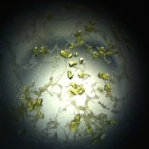
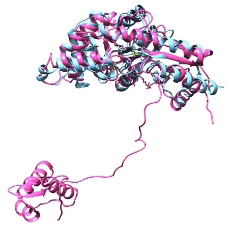
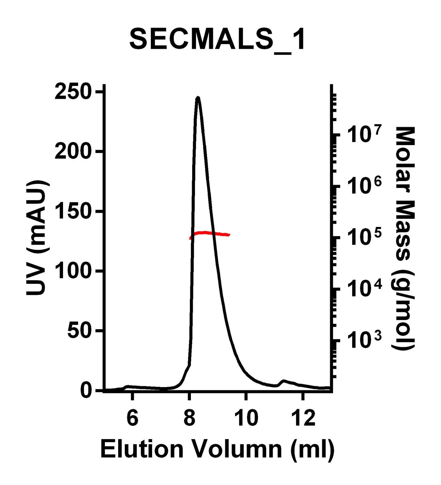
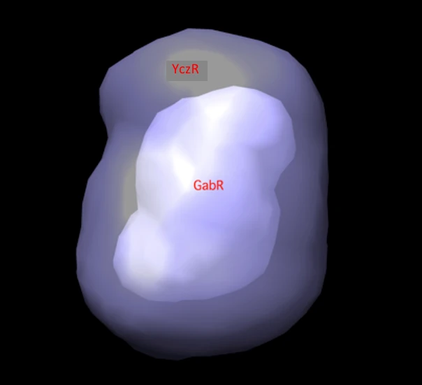

Context
YczR is a newly identified PLP-dependent MocR/GabR-type transcription regulator from Klebsiella pneumoniae. The project combined structural biology with biochemical assays to understand its quaternary organization, ligand binding, and DNA recognition.
The work was a first pass at turning an uncharacterized regulator into a testable antibiotic target: solve the domain, define its assembly in solution, and build assays that could be used for screening.
What I did
- Determined crystal structures of the YczR regulator domain and compared the crystal packing with SAXS envelopes.
- Used SEC-MALS and mass spectrometry to define oligomeric state and ligand binding.
- Built a fluorescence-polarization DNA-binding assay and an end-point assay to screen for YczR activity.
- Modeled a YczR–DNA complex to generate hypotheses about target recognition.
Key results
- Regulator domain
- 1Crystal structure
- Orthogonal methods
- 3X-ray, SAXS, SEC-MALS
- Functional assays
- 2DNA binding and end-point
- The regulator domain adopts a distinct PLP-binding fold with a defined binding pocket.
- Crystal and SAXS data support a quaternary arrangement that informs how the domain may engage DNA.
- YczR is a potential antibiotic target, and the assays provide a path to screening.
Figures




Collaborators

Dr. Dali Liu
Principal Investigator
Loyola University Chicago

Dr. Boguslaw Nocek
Crystallography collaborator
Loyola University Chicago
Output
Source and disclosure. Adapted from Dr. Zheng's April 2024 research summary and speaker notes. The YczR work is thesis-era structural biology; some results were not published as a standalone paper.